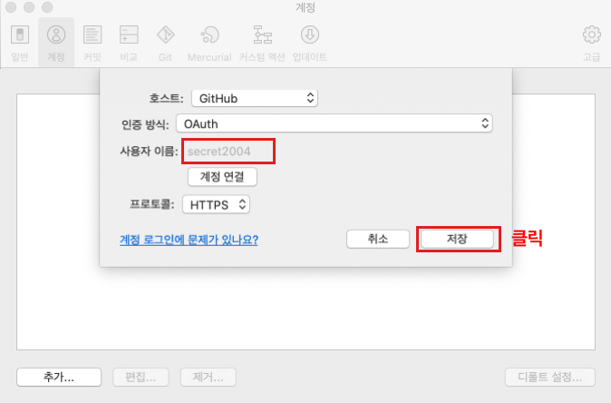
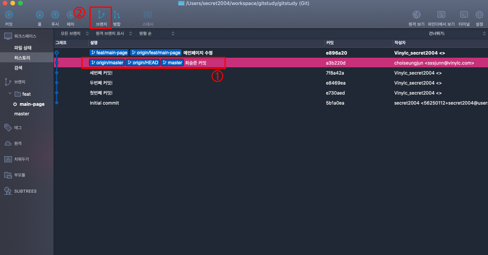

Gui사용법
1. 준비사항
-
- Git 개념 파악
-
- Git 설치
-
- GitHub 가입 (https://github.com/)
-
- GitLab 가입 (https://gitlab.com)
2. 소스트리 설치하기
-
- 본인의 운영체제에 따라 맞게 설치
-
- 설치 도중 ATLASSIAN가입이 필수인데 구글계정으로도 로그인 가능
3. 로컬 저장소 만들기
-
- Git에게 추적당할 로컬 저장소 생성
-
- 노란색으로 표시한 부분은 Git과 연동하는 부분이고, 빨간색으로 표시되는 부분은 내 로컬 저장소 안에 있는 파일들을 보여줌
-
- Staging Area는 Git에게 추적되는 공간, Working Directory는 Git에게 추적되지 않는 공간
-
- 오른쪽 화면에서는 생성 및 변경된 파일을 확인할 수 있음
4. Add, Commit, Push, Pull 하기
Add (스테이지 올리기)
-
- ① : 전체 파일 add하기
- ②,③ : 개별파일 add하기
-
- ① : 전체파일 add 취소하기
- ②,③ : 개별파일 add 취소하기 (두가지 방법이 있음)
Commit
-
- ① : 커밋할 파일 선택 후 커밋버튼 클릭
-
- ② : 커밋 메세지 작성
-
- ③ : 커밋 버튼 클릭
Push (원격저장소에 저장)
-
- push를 하기위해선 원격저장소가 있어야 하므로, 일단 github, gitlab을 사용하는 방법으로 소개함 (github, gitlab 계정필요)
-
github 연결
-
- 내용 확인 후 계정 연결 클릭
-

- 본인의 github 계정 등록하고 저장버튼 클릭
-
- 본인의 github 계정이 등록된 걸 확인 할 수 있음.
- ① : 계정이 많을 시에 디폴트 설정으로 기본 계정을 설정할 수 있음.
-

- ① : 클릭
-
- ① : 클릭
-
- ① : 본인의 github 저장소 url 등록 시 나머지 정보 자동 생성
- ② : 등록 후 클릭
-
- ① : 클릭
- ② : 클릭
-
- 본인의 github 원격저장소에 잘 올라간걸 확인할 수 있음
-
gitlab 연결
-
- ① : 클릭
- ② : 클릭
-
- ① : 본인의 github 저장소 url 등록
- ② : 로컬 경로
- ③ : 클릭
Pull (소스가져오기)
-
- ① : 클릭
- ② : 클릭
브랜치(branch - 가지치기)
생성
-

- ① : 브랜치를 만들 기점에서 클릭
- ② : 클릭
-

- ① : 기능/브랜치명 입력 (나중에 기능별로 브랜치 볼수 있음. 브랜치 생성시 유사 기능일 경우 기능명을 동일하게 기입하는게 좋음)
- ② : 클릭
-
- ① : 해당영역에서 내가 생성한 브랜치들을 확인할 수 있음
- ② : 파일 수A정 후 생성한 브랜치로 commit&push하면 master는 옛날 commit에 머물러 있는데 최신커밋은 브랜치로 표기되는걸 확인 할 수 있음